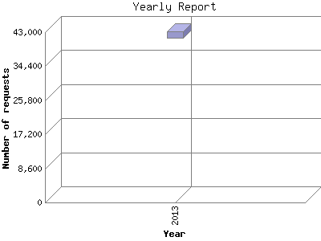

The Yearly Report shows total activity on your site for each calendar year.
Remember that each page hit can result in several server requests as the images
for each page are loaded.
Note: Most likely, the first and last years
will not represent a complete year's worth of data, resulting in lower hits.

| Year | Number of requests | Number of page requests | |
|---|---|---|---|
| 1. | 2013 | 42,424 | 2,606 |
Most active year 2013 : 2,606 pages sent. 42,424 requests handled.
Yearly average: 2,606 pages sent. 42,424 requests handled.
This report was generated on November 26, 2013 04:33.
Report time frame June 15, 2013 22:34 to November 25, 2013 19:34.
| Web statistics report produced by: analog 5.1 / Report Magic 2.21 |